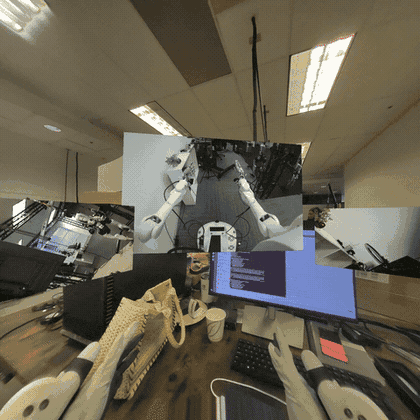
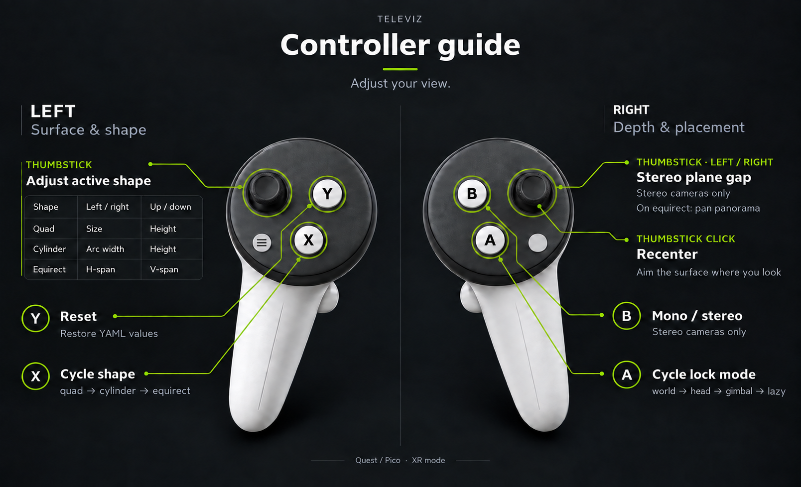

Camera Streaming#
camera_viz is the reference camera-streaming sample built on Televiz (isaaccapture.viz). It captures frames from one or more cameras
and streams them to an XR headset — one plane per camera, aspect-fit — either directly or from a
robot to a workstation over the network (split mode). It can also stream recorded camera
data — a video file replayed in place of a live camera — and render
to a desktop window instead of the headset.
Controllers adjust the camera view, including its placement, shape, and stereo settings. This sample does not send robot commands or record robot demonstrations; see Next steps for robot-control and recording integrations.
The sample lives at examples/camera_viz/. This page walks you from setup and a camera-free first run to real cameras and the robot → workstation split mode. It is the primary user guide for the sample, including commands, configuration, controller bindings, and troubleshooting.


camera_viz in XR mode — one plane per camera.#
Requirements#
A workstation meeting the system requirements (Ubuntu, NVIDIA GPU, CUDA driver) — every source hands frames to the renderer GPU-resident via CuPy.
For Jetson platforms:
Orin: JetPack 6.2.x or 7.2.1
Thor: JetPack 7.x
For the default XR mode, a headset to connect as the CloudXR client — follow the quick start step 5. Connect an XR headset. The viewer launches the CloudXR runtime itself; nothing to start separately. No headset handy?
--mode windowrenders to a desktop window instead.CUDA development components: matching runtime, NVRTC, and headers for CuPy kernels. JetPack 7.2.1 uses CUDA 13.2; see Jetson CUDA prerequisites.
Camera — optional, recommended: USB / UVC, OAK-D, or supported ZED camera for a live feed. A recording or synthetic pattern works without a camera; ZED SDK capture needs
setup --with-zed.XR controllers — optional: for adjusting the view with Controller bindings.
CloudXR setup: see Quick Start for first-launch requirements and firewall configuration.
For Jetson Argus cameras, a Jetson image with libargus, CUDA, EGL, and the Jetson Multimedia API headers installed. The optional Argus native source is built only when setup is run with
--with-argus.
Setup#
Clone the repository if you haven’t already (quick start step 1. Check out code base (for examples)), then run the sample’s one-time setup:
examples/camera_viz/camera_viz.sh setup
source examples/camera_viz/.venv/bin/activate
On Jetson, add --jetson. If CUDA components are missing, see
Jetson CUDA prerequisites below.
There is no need to install the isaaccapture pip package yourself. setup builds the
sample’s own environment: isaaccapture[cloudxr] — the cloudxr extra is not optional here,
since XR is the default display mode and the viewer launches the runtime itself — plus every
other Python dependency, into an isolated .venv/ via uv (no --system-site-packages).
For isaaccapture it resolves a release matching the checkout’s major/minor version, falling
back to a release candidate and then, after asking, to a source build of the surrounding
checkout (see scripts/_install_deps.sh; --wheel and --build-from-source override
the choice). It also installs the sample itself there as an editable package, which is what
python -m isaaccapture_examples.camera_viz imports. When required system packages are
missing, it prints the exact apt-get line to approve — declining, or a non-interactive run,
aborts.
Setup selects CuPy for the toolkit at CUDA_PATH, if set. Otherwise it takes the first CUDA
12 or 13 toolkit among those of each nvcc on PATH and /usr/local/cuda: first one
with a version file (version.json, version.txt, or a cuda-X.Y directory), then one
whose nvcc --version it can read and whose include/ holds the CUDA headers, such as the
distro nvidia-cuda-toolkit at /usr. CuPy finds the headers of that second kind only
through CUDA_PATH, so setup records it in the venv, and camera_viz.py,
camera_streamer.py and scripts/check_cuda.py set it unless CUDA_PATH or
CUDA_HOME already is. Setup checks the loaded NVRTC version and executes a GPU kernel
before reporting success.
By default setup provisions the direct-mode path — USB / UVC and OAK-D camera support. Split
mode (RTP), Jetson Argus, and ZED support are opt-in because they need additional native
dependencies or vendor SDKs. Flags trim or extend that:
Flag |
Effect |
|---|---|
|
Skip USB / UVC webcam support ( |
|
Skip OAK-D support ( |
|
Also install the split-mode dependencies: the GStreamer system packages, PyGObject, and the
native NVENC/NVDEC codec build. Required for |
|
Build the optional Jetson Argus native source ( |
|
Also build + install the ZED SDK’s Python API ( |
|
Split mode only — robot-side install of just the sender’s dependencies. |
|
Enable Jetson CUDA library discovery for direct or split mode. With RTP enabled, also check for the matching NVRTC package. |
|
Use |
|
Install a locally built |
|
Skip the package index and build |
For example, to use a wheel built from this checkout, run from the repository root:
examples/camera_viz/camera_viz.sh setup --wheel build/wheels/isaaccapture-*.whl
Using an external virtual environment#
To reuse a Python 3.12 environment, run from the repository root:
examples/camera_viz/camera_viz.sh setup --venv /absolute/path/to/venv
Setup installs dependencies there and links examples/camera_viz/.venv to it. Move an existing
.venv directory aside first. The wrapper uses .venv/bin/python regardless of the active
shell environment; activation is optional. Add --jetson on Jetson.
Jetson CUDA prerequisites#
CuPy compiles GPU kernels at runtime using NVRTC and CUDA headers (CuPy requirements). If these components are already installed, skip this step.
On JetPack 7.2.1 / CUDA 13.2, the JetPack CUDA development package provides them. With the matching NVIDIA repositories configured:
sudo apt update
sudo apt install nvidia-cuda-dev
Use the CUDA toolkit matching your JetPack. --jetson configures library discovery. A separate nvcc compiler is needed for CUDA source builds, such as the native
RTP codec, rather than ordinary CuPy kernel execution.
OAK-D USB permissions#
OAK-D cameras need the Luxonis udev rule. Without it, depthai reports
Insufficient permissions to communicate with X_LINK_UNBOOTED device and cannot find the
camera. setup offers to install the rule when an OAK-D is attached and no rule covers it;
declining that optional step does not abort setup. To install it manually:
echo 'SUBSYSTEM=="usb", ATTRS{idVendor}=="03e7", MODE="0666"' | sudo tee /etc/udev/rules.d/80-movidius.rules
sudo udevadm control --reload-rules && sudo udevadm trigger
Then unplug and reconnect the camera.
Command overview#
After setup, run the following commands from examples/camera_viz. CONFIG is a YAML
path, such as configs/replay.yaml:
Command |
Purpose |
|---|---|
|
Run the viewer; flags after |
|
Run a local sender and receiver to test RTP. Requires |
|
Install the sender on a remote Jetson and start its systemd user service. |
|
Inspect the remote camera-streamer service. |
|
Follow the remote camera-streamer logs. |
|
Restart the remote camera-streamer service. |
deploy and service-* use the SSH credentials described in Split mode — robot → workstation over RTP.
The service-* commands manage the robot’s RTP sender; CloudXR has separate
service commands.
Run .venv/bin/python -m isaaccapture_examples.camera_viz --help for viewer and CloudXR
launcher flags.
Web client for camera visualization#
The default Isaac Teleop Web Client shows an in-XR control panel with connection information and controls that are useful during development. To hide this panel for camera viewing, open Advanced settings → In-XR comfort before connecting and set Control panel when entering XR (saved per teleop application) to Hide control panel.
This preference is saved for the selected teleop application and takes effect when entering XR. If already connected, leave and re-enter XR to apply it. Use the small Show control to reopen the panel and Hide to dismiss it while the camera stream continues.
Follow the headset connection steps for the server address, certificate acceptance, and connection.
First run — a recording, no camera required#
The recorded-camera source (type: video) replays a video file through exactly the same
source → layer → Televiz path a live camera uses. It is the supported way to stream recorded
camera data, it needs no extra setup, and it is the quickest end-to-end check. A test clip ships
with the repo, and configs/replay.yaml
already points at it. Fetch the clip with Git LFS if your checkout contains only its pointer:
git lfs pull --include="examples/camera_viz/test_data/recording.mp4"
Keep OpenCV installed for replay (--no-v4l2 skips it). From the repository root:
cd examples/camera_viz
./camera_viz.sh run configs/replay.yaml # XR headset (default)
./camera_viz.sh run configs/replay.yaml --mode window # desktop window instead
In XR mode the viewer first brings up the CloudXR runtime (accept the EULA on first launch, or
pass --accept-eula). Open the printed client URL in your headset browser, accept the host’s
certificate, and click Connect, following 5. Connect an XR headset. On Jetson Orin, select
H.264 in the client’s Video Codec setting before connecting.
You should see the terminal report the session and the source coming up:
camera_viz: source=local, mode=xr, xr=True, shapes=quad, 1 layer(s)
[video] opening...
[video] connected
[video] streaming
and the clip looping on a plane in the headset once it connects — or in a desktop window
(mode=window, xr=False) with the --mode window override, which starts no runtime.
First-session checklist#
With the default replay.yaml:
Playback: one plane is visible and the clip loops.
Head movement: small turns and leaning change your viewpoint; the plane stays anchored.
Lazy recentering: look more than 45° away for about a second; the plane moves smoothly back in front of you.
Image quality: no freezing, flicker, torn regions, or unexpected colors while still or moving. This mono clip should show the same source image in both eyes.
Controllers, if available: right-stick click recenters;
Achanges lock mode;Yrestores the config.Restart: press
Ctrl+C, rerun, and reconnect if needed; playback resumes.
In window mode, check playback, image quality, and restart. If a check fails, see Troubleshooting.
Replaying your own recording#
Point path at any file OpenCV’s FFmpeg backend reads — mp4 / mkv / webm carrying H.264,
HEVC, AV1, and so on. The file is probed once at startup for its size and frame rate (a missing
or absurd rate falls back to 30 fps); a missing or unreadable file is a configuration error and
fails immediately instead of retrying like a camera would. A complete config:
source: local
cameras:
- name: replay
enabled: true
type: video
path: ../test_data/recording.mp4 # required; relative to this YAML's directory
loop: true # false = hold the last frame at end of file
fps: 0 # 0 = the file's native rate
stereo: false # true = split a side-by-side recording into eyes
# width/height default to the file's native size (per eye when stereo)
display:
mode: xr # or: window
placements:
replay: { lock_mode: lazy, distance: 1.5 }
With source: rtp, width, height, and fps become required — the sender paces its
encode loop at fps and the receiver sizes its decoder from the config — and stereo is
rejected, since the sender needs per-eye streams. A mono recording is otherwise a fine capture
side for split mode and for loopback, which exercises the whole
encode → UDP → decode path with no camera attached.
Supported sources#
The source kind is selected by the type field of each entry in the YAML cameras list:
|
Notes |
|---|---|
|
USB / UVC cameras — anything |
|
OAK-D RGB / LEFT / RIGHT; mono or |
|
ZED 2 / Mini / X One; mono or |
|
Jetson libargus cameras through CUDA EGLStream, including GMSL sensors exposed by
|
|
Recorded camera data — video-file replay (anything OpenCV’s FFmpeg backend reads). Loops
by default; |
|
Debugging tool — GPU-generated test pattern, no camera or file required. |
Running with a real camera#
Attach the camera to the machine that runs the viewer, keep source: local in the config, and
run with the matching config. First edit its device, resolution, and frame rate to match your
camera. In particular, v4l2.yaml defaults to a ZED Mini’s 2560×720 UVC mode; a regular webcam
needs values it supports (inspect them with v4l2-ctl --list-formats-ext):
./camera_viz.sh run configs/v4l2.yaml # or oakd.yaml / zed.yaml / argus_shw5g.yaml
ZED Mini: UVC or SDK stereo. In the 2560×720 UVC mode used by v4l2.yaml, the left
and right camera images are packed side by side. The sample displays that entire image on one
plane, with the same packed image in both headset eyes. For per-eye stereo, install ZED support
with ./camera_viz.sh setup --with-zed and use configs/zed.yaml (type: zed,
stereo: true), which retrieves a separate image for each eye through the ZED SDK.
You should see the same startup lines as above with the camera’s tag ([v4l2],
[oakd], [zed], [argus]) and the live feed. Multiple entries in the cameras list
render as one plane each.
Jetson Argus / GMSL cameras#
Argus support is for Jetson-local capture with minimum camera-to-display latency. It bypasses
nvarguscamerasrc and consumes Argus EGLStreams directly:
nvargus-daemon -> libargus EGLStream -> CUDA YUV-to-RGBA -> camera_viz
Install with the Argus backend enabled on the Jetson:
examples/camera_viz/camera_viz.sh setup --with-argus --jetson
Use nvargus_nvraw to confirm the Argus sensor indices before editing the YAML:
/usr/sbin/nvargus_nvraw --lps
The repository includes configs/argus_shw5g.yaml for a SENSING SHW5G stereo pair on Jetson AGX
Thor. Its tested settings use independent Argus sessions for sensors 0 and 1,
repeat_capture: true for lower request latency, pair_emit_mode: both to avoid duplicate
stereo submits, and swap_uv: true for the observed SHW5G color layout. Some SENSING driver
stacks also require running nvargus-daemon with enableCamInfiniteTimeout=1.
Other ready-to-edit configs include realsense.yaml, synthetic.yaml,
synthetic_stereo.yaml, synthetic_xr_3up.yaml, and multi_camera.yaml in
configs/.
Display modes#
XR is the default: each camera renders as its own plane in the headset via the active OpenXR
runtime, and stereo sources (stereo: true) render true side-by-side stereo. Pass
--mode window (or set display.mode: window in the YAML) to render to a desktop window
instead — no headset or runtime needed; stereo shows the left eye.
In XR, how a plane follows the operator’s head is the per-camera lock_mode under
display.placements.<name>:
Mode |
Behavior |
|---|---|
|
Placed once in front of you and stays put. |
|
Follows your head every frame. Head-locked content updates its pose at application
rate, so it trails fast head motion by roughly a frame — expected for any head-locked
OpenXR layer; prefer |
|
Follows your position but not your rotation: the surface stays pointed where you first looked, walks with you, and turning your head looks around it. The natural mode for wide cylinder feeds (a “virtual gimbal”). |
|
World-locked, but re-snaps in front of you when you look away (default). |
Lazy-mode knobs live under placements.<name>: look_away_angle_deg,
reposition_distance, reposition_delay_s, transition_duration_s.
Controller bindings#
In XR the controllers retune the view live, without editing the YAML and restarting. Quest and Pico report these bindings identically. The right hand changes how the feed looks; the left, what surface it is mapped onto:


Bindings at a glance. The table below is the same thing in words.#
Input |
Effect |
|---|---|
Right stick ←/→ |
Stereo plane gap — how far apart the two eyes’ planes sit
( |
Right stick click |
Recenter on your view: an |
|
Cycle the lock mode: |
|
Toggle mono / stereo. Stereo cameras only. |
|
Cycle the shape: |
|
Reset everything to the YAML values. |
Left stick |
Horizontal / vertical axes adjust |
Changes apply to every camera at once and appear both on the terminal status panel and on a
head-locked panel in the headset that auto-hides after about 2.5 seconds. Nothing is written
back to the YAML. Neither toggle reallocates: B sends the left frame to both eyes, and
X flips visibility between shapes built at startup. The two extra layers per camera cost
VRAM (reported at startup); shape_switching: false keeps only the configured shape.
Bindings, rates, and limits live under display.controls:
display:
controls:
enabled: true # false disables the bindings
hud: true # false disables the in-headset readout
shape_switching: true # keep all three shapes resident for X
deadzone: 0.2 # stick rest-position tolerance
plane_distance_rate_cm_per_s: 2.0 # held-stick ramp rates
size_rate_m_per_s: 0.5
offset_rate_m_per_s: 0.5
angle_rate_deg_per_s: 40.0
Limits are plane_distance_min_cm, plane_distance_max_cm, size_range_m,
offset_y_range_m, cylinder_, equirect_h_range_deg, and
equirect_. Defaults stay within what the layers accept; see
configs/zed.yaml for a commented example.
A quad’s distance and a cylinder’s cylinder_radius_m stay YAML-only. Apparent size is
2 * atan((width / 2) / distance) and arc width is radius * angle (angle in radians),
so moving either surface farther away while enlarging it by the same factor preserves its
apparent size. The real distance to the surface still affects stereo depth.
Stereo plane distance#
A stereo layer draws each eye’s image on its own plane. stereo_ sets
the gap between them:
display:
placements:
zed:
distance: 1.0 # how far away the planes are, in meters
stereo_plane_distance_cm: 5.0 # how far apart they are, in centimeters
At zero both eyes share one plane, so the scene is packed into the space between you and
distance. Widening the gap pushes the scene back and lets it spread out. The value is
passed to the layer’s stereo_baseline_mm after multiplying by 10; the stick adjusts it in
0.1 cm steps. This is separate from the camera’s physical lens baseline, which is fixed in
hardware and determines the scene’s depth scale.
The HUD suggests a value using the plane distance and the headset’s measured IPD, shown
alongside the current value (for example, 5.0/5.2). The suggestion is advisory; the stick
sets the value. Its ceiling is bounded by the measured IPD as well as the configured limit
to avoid divergent parallax: at a gap equal to your IPD the eyes’ rays are parallel;
beyond it they would have to splay outward. B sets the gap to zero in mono mode and
restores it when switching back to stereo.
The gap has no effect on the equirect sphere at its default infinite radius, so the right
stick pans that shape instead. Televiz also offers stereo_convergence_deg, a rotation-based
equivalent for curved layers that works at any radius. Live gap adjustment requires
Layer.; when using an older wheel without that method, the binding
disables itself with a notice while A, B, X, and Y remain available.
Display surfaces#
By default each camera renders on a flat plane, which suits normal-FOV feeds. Wide-FOV and
panoramic sources look better on a curved surface: set shape per camera under
display.placements.<name>:
Shape |
Behavior |
|---|---|
|
Flat plane. All lock modes apply. |
|
Curved arc facing the operator, so the image stays at a constant viewing distance edge
to edge. |
|
Full 360°×180° sphere around the operator, for equirectangular panorama / VR-video
sources. The middle of the texture points along |
Curved shapes exist only in XR mode — the viewer exits with an error in window mode. Stereo
sources render per-eye textures on the same surface, and stereo_baseline_mm adds a per-eye
pose shift (no effect on the equirect sphere at its default infinite radius).
Surfaces are composited by the OpenXR runtime, which keeps them sharp under head motion and lets
CloudXR stream them efficiently (see
OpenXR composition layers). For flat planes only,
compositor: televiz opts a camera back into Televiz’s built-in compositor. On Jetson Orin
(CloudXR experimental runtime), set compositor: televiz so the plane is not left black; see
Troubleshooting below. On the Televiz 2D API the same switch is
openxr_composition = False (see Jetson Orin, XR).
Aiming an equirect#
The middle of the texture maps to the sphere pose’s −z direction and the middle row to its horizon. With no rotation, that is the reference space’s forward direction — where the headset faced when it last recentered. Aim a camera mounted facing another way with:
display:
placements:
sky:
shape: equirect
equirect_yaw_deg: -90.0 # heading the middle of the feed points at
Positive yaw turns left. The right stick pans live, its click centers the panorama on your
view, and Y restores the YAML value. The status panel shows the heading in its shape
column (for example, equirect +35°). The sphere follows the operator; lock_mode,
distance, and size do not position it.
CloudXR runtime flags#
In XR mode the viewer attaches to the running CloudXR runtime, or starts one if none is serving. Useful flags:
--accept-eula— accept the CloudXR EULA non-interactively (first run only).--cloudxr-device-profile PROFILE—NV_DEVICE_PROFILE(defaultQuest3).--no-host-client— disable serving CloudXR.js athttps://<host>:48322/client/. Only applies when this run starts the service; stop and restart the service to change hosting.
When the viewer starts a CloudXR service with hosting enabled (the default;
--no-host-client disables it), it prints the local /client/ URL. Open
https://<host>:48322/client/ on the headset, accept the self-signed certificate, and
click CONNECT. If the service was started with --no-host-client, use the GitHub Pages
client URL reported by service status instead. To inspect or stop an already-running
service, activate the example venv (or any environment with isaaccapture) and run:
python -m isaaccapture.cloudxr.service status
python -m isaaccapture.cloudxr.service stop
Run .venv/bin/python -m isaaccapture_examples.camera_viz --help for the rest (install dir,
env-config file, WSS proxy toggle).
Runtime settings themselves are declared in the config rather than exported. The viewer ships
defaults (pose wait off, runtime foveation on), and display.cloudxr overrides them per
deployment — list only what you want to change:
display:
cloudxr:
NV_DEVICE_PROFILE: apple-vision-pro
NV_ENABLE_POSE_WAIT: null # null drops a viewer default
The viewer writes these to a generated --cloudxr-env-config file, which outranks the process
environment — so a value left in your shell (for example after sourcing
~/.cloudxr/run/cloudxr.env, as --no-launch-cloudxr-runtime suggests) cannot silently
override the config, and neither can it override --cloudxr-device-profile. Booleans are
written in the lowercase spelling the runtime’s parser recognises; the launcher-computed keys
(XR_RUNTIME_JSON, NV_CXR_RUNTIME_DIR, NV_CXR_OUTPUT_DIR, XRT_NO_STDIN) are
rejected by name. Passing --cloudxr-env-config yourself takes precedence over the generated
file.
An unknown variable name warns with a suggestion before the runtime launches, and is passed
through regardless — the runtime has more settings than the viewer lists. To confirm what the
runtime resolved, read the settings dump at the top of the newest
~/.cloudxr/logs/cxr_server.*.log.
Monado’s DEBUG_GET_ONCE options, including NV_ENABLE_POSE_WAIT, do not appear in that
dump. Add XRT_PRINT_OPTIONS: true under display.cloudxr when starting the runtime to
log each option as NAME=value (raw); (nil) means no value arrived.
NV_DEVICE_PROFILE selects device matching, not just tuning. Non-Quest profiles use
separate-frame packing and do not support the packed-frame path required by
client-reconstructed streaming.
Split mode — robot → workstation over RTP#
Split mode runs the capture side on the robot (the camera_streamer module) and ships RTP H.264 to
the viewer on the workstation (source: rtp).
Warning
Split mode is not recommended in most cases. It exists for one situation: the cameras are on the robot, but Isaac Capture runs on a workstation, so the frames must be streamed to where Isaac Capture is running. That costs a full extra encode/decode hop — NVENC on the robot, UDP, NVDEC on the workstation — so whenever a camera can attach directly to the machine running Isaac Capture, run direct mode instead. Wired networks only: there is no retransmit or FEC — one lost packet corrupts one frame until the next IDR (default every 5 s).
In split mode every camera entry must pin width, height, and fps in the YAML — the
receiver sizes its decoder from the config, not from the wire.
The workstation needs the RTP dependencies, which setup does not install by default — re-run
it with --with-rtp if you provisioned for direct mode first. The robot side is handled by
deploy, which implies the flag.
Set source: rtp in the config, export the robot/streaming credentials once per shell, then
deploy the sender and run the viewer:
export REMOTE_HOST=10.0.0.5 REMOTE_USER=nvidia
read -s REMOTE_PASSWORD && export REMOTE_PASSWORD # only if not using SSH keys (bash)
export STREAMING_HOST=10.0.0.42 # workstation IP
./camera_viz.sh deploy configs/v4l2.yaml # full deploy + systemd unit on the robot
./camera_viz.sh run configs/v4l2.yaml # viewer on the workstation
Use SSH keys, or install sshpass locally and export REMOTE_PASSWORD as above. The
remote commands also accept --host and --user in place of REMOTE_HOST and
REMOTE_USER. --password overrides REMOTE_PASSWORD, but reading the password
interactively keeps it out of shell history and the command line.
deploy performs these steps:
Sync the example to
~/camera_vizon the robot withrsync.Run
scripts/_install_deps.sh --sender-only --jetsonthroughssh -t. Add--with-argustodeployto build the Argus source on the robot. Missing system packages or JetPack CUDA wiring prompt for approval on the robot.Render
~/.config/systemd/user/camera-streamer.service.--streaming-host IP(orSTREAMING_HOST) injects--host IPinto itsExecStartwithout changing the YAML.Enable lingering once with
sudo loginctl enable-linger, then enable the user service and restart it, so a redeploy replaces a streamer that is already running.
--no-service stops after source sync and dependency installation. In that case,
--streaming-host does not configure a running sender; pass --host when starting
python -m isaaccapture_examples.camera_viz.camera_streamer manually. The sender retries
across unplug, SDK errors, and network blips. Operate the installed unit with:
./camera_viz.sh service-status
./camera_viz.sh service-logs
./camera_viz.sh service-restart
Loopback#
Loopback is a testing / debugging aid, not a deployment mode: ./camera_viz.sh loopback
configs/v4l2.yaml runs the sender and viewer together on 127.0.0.1 — the quickest way to
smoke-test the RTP path on one machine. It also works camera-free with a mono type: video
entry: ./camera_viz.sh loopback configs/replay.yaml runs as shipped.
Two things to know when running it:
Use the config that matches the attached camera.
configs/v4l2.yamlis a ZED Mini template (/dev/video0, 2560x720); on any other camera it fails to open and the viewer reportssubmit/s 0.0. For a RealSense, runconfigs/realsense.yaml.loopbackdoes not forward--mode, so it opens in the YAML’sdisplay.mode(xrby default). Setdisplay.mode: windowin the YAML for a desktop window.
Configuration#
A single YAML drives both capture and visualization. Each entry in the cameras list becomes
its own plane (and, in split mode, its own RTP port). Abbreviated:
source: local | rtp
streaming:
host: 192.168.1.100 # workstation IP (overridden at deploy time)
encoder: auto | native | gstreamer
cameras:
- name: cam
enabled: true
type: v4l2 # v4l2 | oakd | zed | argus | video | synthetic
width: 2560 # video: optional — defaults to the file's size
height: 720 # (required when source: rtp)
fps: 30
stereo: false # zed / oakd / argus / video / synthetic — per-eye capture + SBS in XR
path: clip.mp4 # video only — file to replay, relative to this YAML
loop: true # video only — rewind at end of file
sensor_id: 0 # argus mono only; use sensor_id_left/right for stereo
sensor_mode: 0 # argus only
repeat_capture: true # argus only — use repeat requests when supported
pair_emit_mode: both # argus independent stereo only: either | both
rtp:
port: 5000 # left eye when stereo
port_right: 5001 # required when stereo + source: rtp
bitrate_mbps: 15
# gop: 150 # default fps*5
# gpu_id: 0 # multi-GPU pin
display:
mode: xr | window # default: xr
window: { width, height }
xr:
near_z: 0.05 # default
far_z: 100.0 # default
system_wait_seconds: -1 # default; wait forever (0 fails fast)
clear_color: [r, g, b, a]
placements:
cam:
lock_mode: lazy # world | head | lazy | gimbal
distance: 1.5
offset_x: 0.0
offset_y: 0.0
# size: [w_m, h_m]
# stereo_plane_distance_cm: 0 # gap between the eyes' planes
# shape: quad # quad | cylinder | equirect (cylinder/equirect are XR-only)
# equirect_yaw_deg: 0.0 # equirect: heading the middle of the feed points at
# compositor: openxr # openxr (default) | televiz — quads only
# cylinder_radius_m: 2.0
# cylinder_angle_deg: 90
See the configs/ directory for a complete, commented YAML per source kind.
Status panel#
In a terminal, camera_viz redraws a snapshot in place:
camera_viz xr · local · 1 camera
────────────────────────────────────────────────────────────────────
render 58.0 fps (target 72) missed 0 gpu 2.1 ms
camera shape lock eyes size m height m planes cm submit/s
zed cylinder lazy stereo 1.00 +0.00 5.0/5.2 64.0
headset IPD 63 mm
stereo planes: 5.0 cm · suggested: 5.2 cm · IPD: 63 mm
planes cm shows the current and suggested stereo gaps. - means a field does not
apply; equirect has no gap, and window mode has no XR controls. While the panel is live,
control messages and source lifecycle lines pass through it so they do not disrupt the
layout. When stderr is not a terminal (for example, piped output or a deployed systemd unit),
the viewer prints one line every five seconds with the same numbers.
Troubleshooting#
The XR session fails to create — check
~/.cloudxr/logs/cxr_server.*.logand~/.cloudxr/logs/runtime_worker_stderr.log(runtime_stderr.logwithISAACCAPTURE_LOGGING=off) for the startup failure.XR_(-35) means the runtime is up but no headset has clicked CONNECT yet; XR mode waits according toERROR_ FORM_ FACTOR_ UNAVAILABLE display.(defaultxr. system_ wait_ seconds -1to wait indefinitely;0fails fast; positive values wait that many seconds; override with--xr-wait). Pass--mode windowto render to a desktop window instead (no runtime involved).No window appears over SSH —
--mode windowneeds a local display; run on the machine you’re sitting at, or use a video-capable remote desktop.“video source: no such file” — relative
path:values resolve against the YAML’s directory (configs/), not the directory you launched from.A source fails asking for CuPy / CUDA — check the matching CUDA headers, NVRTC, and
/usr/local/cudatarget (Jetson CUDA prerequisites on Jetson), then rerun setup.nvidia-smichecks driver support, not installed headers. To test GPU execution, run fromexamples/camera_vizand expectCuPy kernel check passed:.venv/bin/python scripts/check_cuda.pyPython cannot find dependencies — use the sample’s
.venv/bin/python, or select an environment with setup –venv.No module named 'isaaccapture_examples'means the sample is not installed in that environment; rerun./camera_viz.sh setup(with the same--venv, if you used one).No video on Orin. When the CloudXR runtime runs on Jetson Orin, set Video Codec to H.264 in the CloudXR web client. See 5. Connect an XR headset.
Black camera plane on Orin — with the CloudXR experimental runtime on Orin, the default OpenXR compositor shows the camera plane but leaves its contents black. Under the camera’s
display.placementsentry, setcompositor: televiz(quads only). The same feed displays correctly with this workaround:display: placements: cam: compositor: televiz
``type: argus`` is unavailable — rerun setup on the Jetson with
--with-argusand confirm the Jetson Multimedia API Argus headers exist under/usr/src/jetson_multimedia_api/argus.Argus lists sensors but capture stalls — confirm the selected
sensor_idvalues with/usr/sbin/nvargus_nvraw --lps. Some GMSL driver stacks neednvargus-daemonconfigured withenableCamInfiniteTimeout=1.Split mode renders nothing — check the sender is up (
./camera_viz.sh service-status),$STREAMING_HOSTwas the workstation’s IP at deploy time, and UDP ports (default 5000+) aren’t firewalled.CUDA kernel errors — rerun the setup check from
examples/camera_viz. It prints CUDA diagnostics on failure; a driver version fromnvidia-smidoes not identify the installed toolkit:.venv/bin/python scripts/check_cuda.pyThor: ``CUDA_ERROR_NO_BINARY_FOR_GPU`` — an older NVRTC compiler can produce kernels incompatible with Thor. Select your JetPack’s CUDA 13.x toolkit and rerun setup. As a temporary workaround for CuPy kernels, try:
CUPY_COMPILE_WITH_PTX=1 ./camera_viz.sh run configs/synthetic.yaml
This lets the driver compile the kernel for the GPU (CuPy PTX option).
Not sure which side is stuck? — set
verbose: trueat the top of the YAML for periodic per-source breadcrumbs on both ends.
How it works#
The sample is organized so that capture, transport, and visualization are cleanly separated, with Televiz as the compositor at the end of the chain:
camera_viz/
├── camera_viz.sh — CLI: setup / loopback / run / deploy / service-*
├── configs/ — one YAML per source kind
├── test_data/ — sample replay clip (Git LFS)
├── python/isaaccapture_examples/camera_viz/
│ ├── camera_viz.py — receiver / viewer (drives a Televiz VizSession)
│ ├── camera_streamer.py — robot-side RTP sender (per-camera supervisor)
│ ├── config.py — YAML parsing and validation
│ ├── display.py — VizSession + one layer per surface
│ ├── cloudxr_env.py — display.cloudxr → runtime env file
│ ├── cuda_env.py — applies the CUDA_PATH setup records
│ ├── dashboard.py — terminal status panel
│ ├── controls/ — XR controller bindings, shapes, stereo geometry, HUD
│ ├── pipeline/ — source ABC + threaded runner
│ ├── placements/ — XR lock-mode strategies (world / head / lazy / gimbal)
│ ├── sources/ — V4L2 / OAK-D / ZED / Argus / video replay / synthetic / rtp_h264
│ ├── transports/ — RTP sender + receiver (native + GStreamer)
│ ├── argus/ — optional Jetson libargus / CUDA EGLStream pybind module
│ └── codec/ — native NVENC / NVDEC pybind module
└── scripts/
├── _install_deps.sh — installer (setup + deploy)
└── camera-streamer.service.in — systemd unit template
Sources (sources/) implement a common source ABC and hand frames to a threaded runner in pipeline/. Each source produces GPU frames where possible — e.g. the ZED source uses
retrieve_image(MEM.GPU)so BGRA8 stays in VRAM and a CUDA kernel channel-swaps into contiguous RGBA with no host round-trip. The optional Argus source consumes Jetson EGLStreams with CUDA and publishes RGBA buffers without a CPU readback.The viewer (camera_viz.py) creates a
VizSessionand adds oneQuadLayerper enabled camera, then submits each frame to its layer and callsrender()once per frame. Stereo cameras submit both eyes.Transport (transports/) carries the split mode: an RTP H.264 sender on the robot and a receiver on the workstation, with a native NVENC/NVDEC codec module (codec/) or a GStreamer fallback.
Placement (placements/) holds the XR lock-mode strategies. Placement is application policy — Televiz only renders a layer at whatever pose the app sets each frame.
Next steps#
Adjust the view and save placement settings in YAML.
Stream from a robot when capture and viewing run on separate machines.
Share the XR session with teleoperation and map inputs with the retargeting interface.
Control a physical SO-101 and record demonstrations with LeRobot.
Teleoperate a simulated SO-101 and record demonstrations with Isaac Lab.